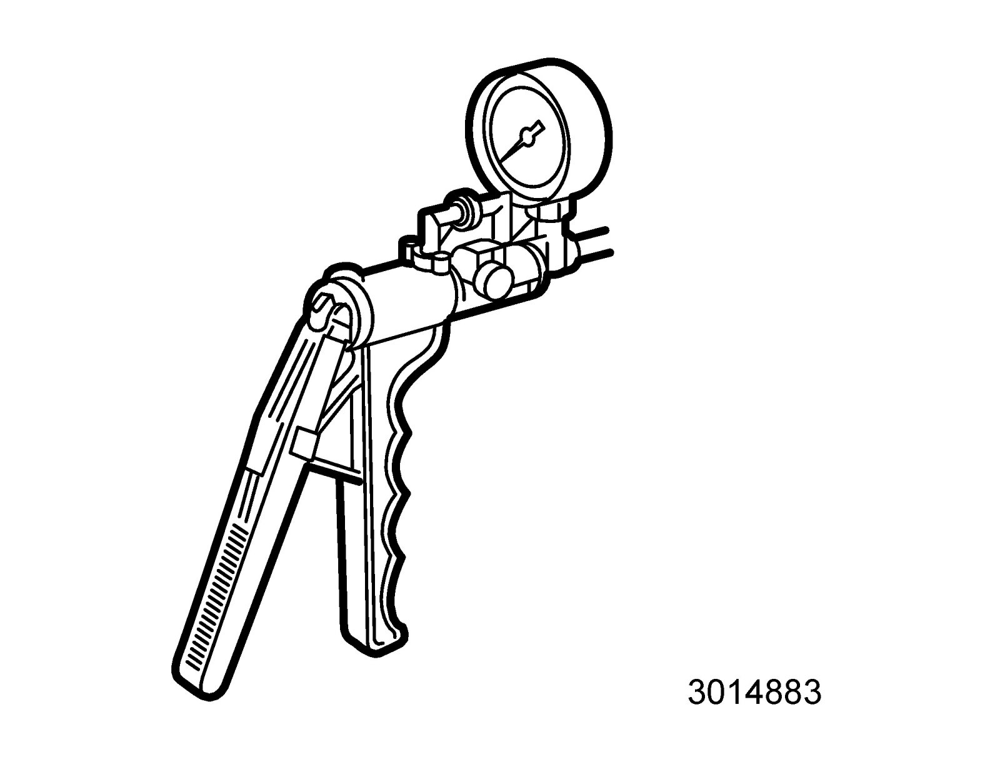
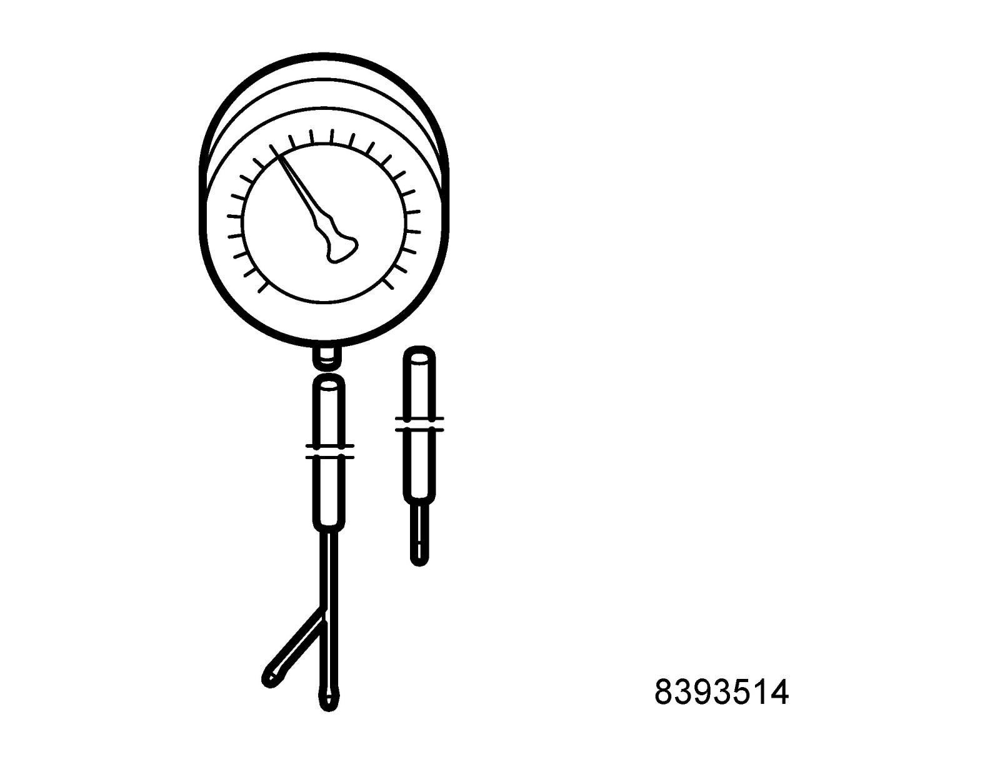
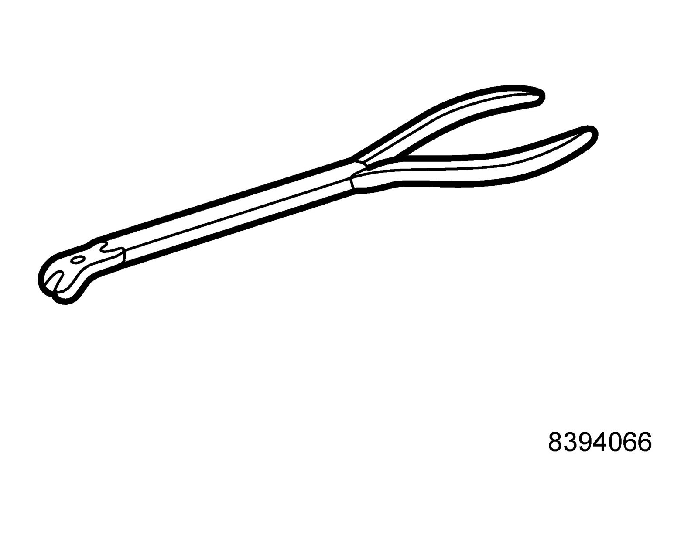
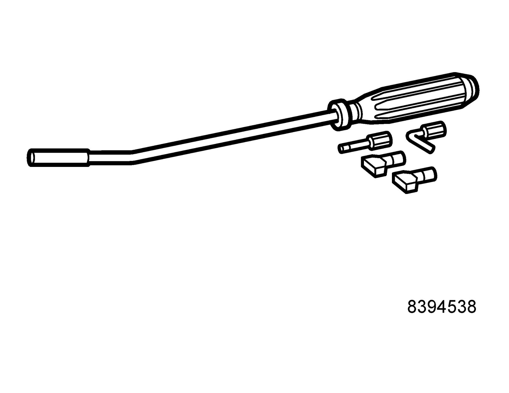
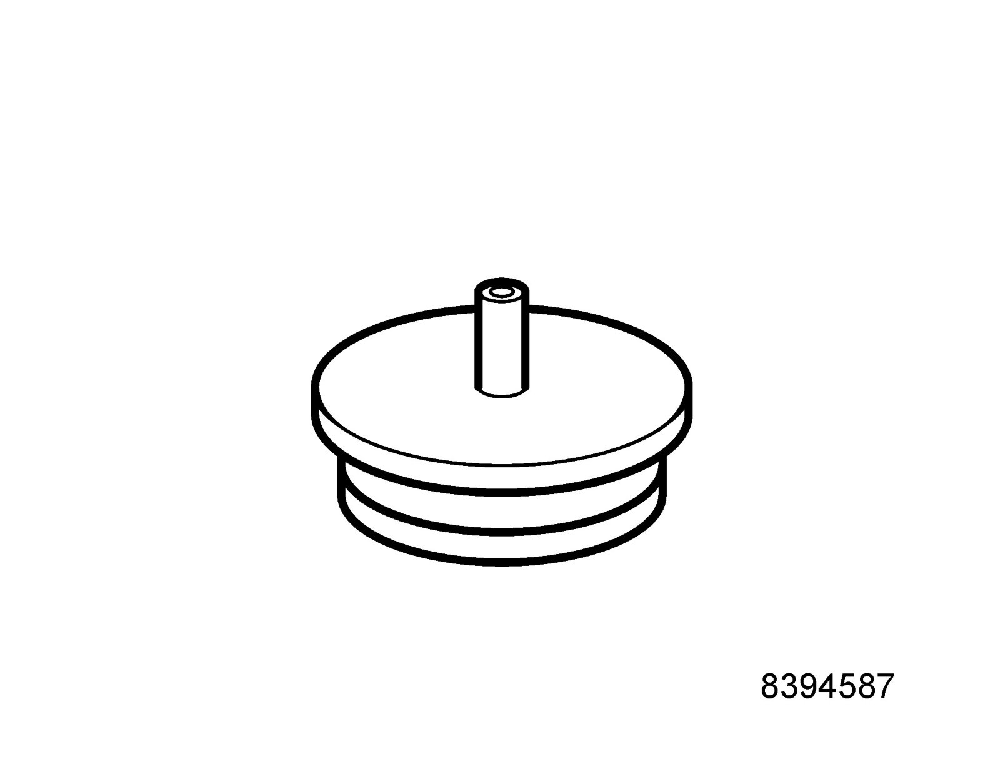
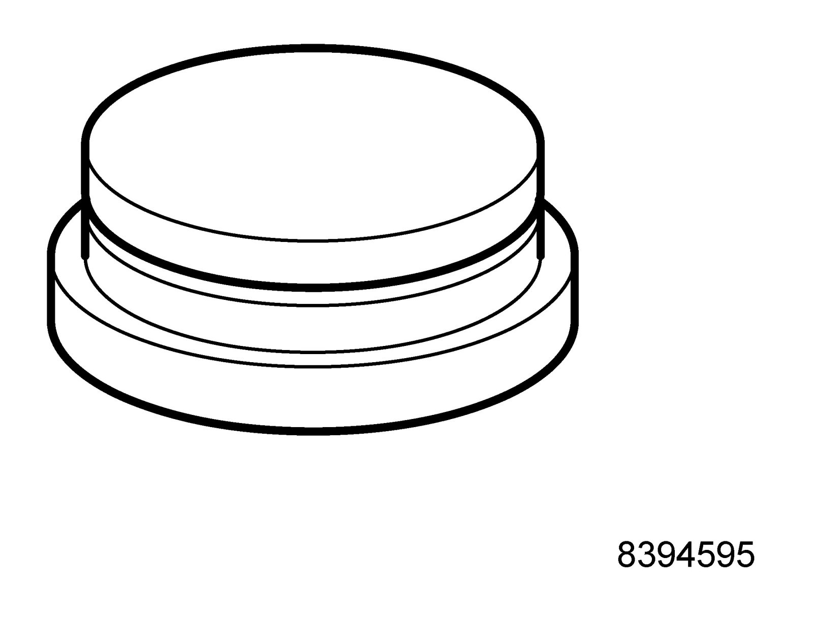

Turbocharger: Tools and Equipment
30 14 883 Pressure/vacuum pump
Group: Engine
83 93 514 Charge pressure gauge

Group: Engine
83 94 066 Pliers

Adjusting basic changing pressure
Group: Engine
83 94 538 Circlip tool

For adjusting basic charging pressure, Turbo
86 12 798 Toolboard T1 Service
Used on 9-5 together with 83 94 520 Wrench, lock nut
Group: Engine
83 94 587 Plug, turbo hose

Checking air tightness
Used together with 83 94 595 Plug, turbo hose.
86 12 798 Toolboard T1 Service
83 94 595 Plug, turbo hose

Checking air tightness
86 12 798 Toolboard T1 Service
Group: Engine
Used together with 83 94 595 Plug, turbo hose.